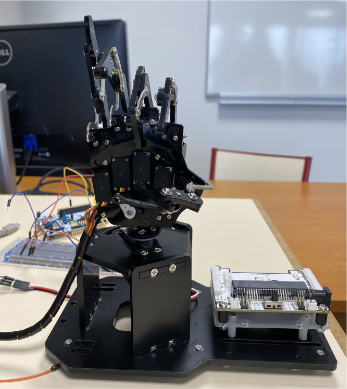
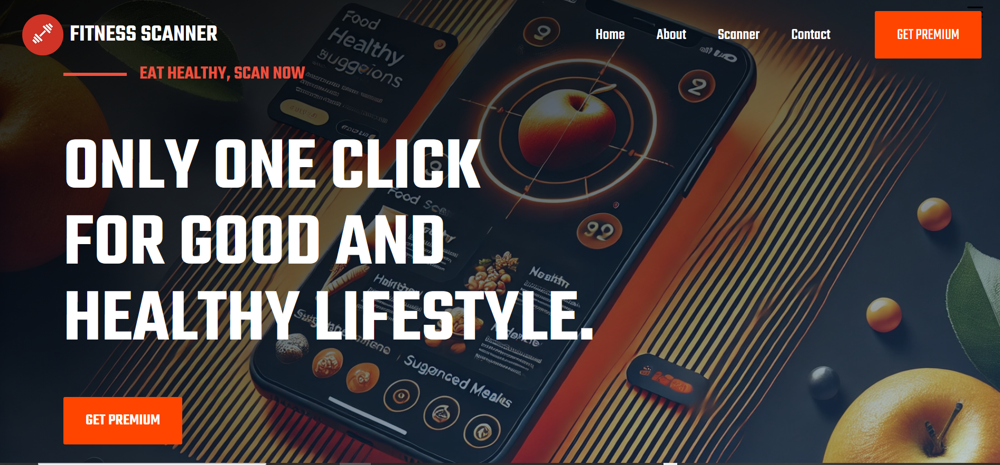

Projet de 5ème année
IA EmbarquéeContrôle automatique d’une prothèse de la main en temps réel en utilisant l’IA. Classification par machine learning en contexte embarqué temps réel.
WELCOME TO MY WORLD — SIMPLICITY & EXPERTISE
Étudiant ingénieur en informatique en 5ᵉ année à l’ENSIM, spécialisé en Interaction Personnes–Systèmes (IPS), je développe un profil polyvalent à l’interface entre Data, logiciel, systèmes et infrastructures. Cette formation couvre l’ensemble de la chaîne numérique, de la conception logicielle à l’exploitation des données, en passant par les systèmes, l’IoT et les architectures applicatives.
Au fil de mon parcours, j’ai acquis une solide compréhension du cycle de vie de la donnée : collecte, ingestion, transformation, analyse et valorisation. Je travaille notamment sur la conception de pipelines de données robustes, l’analyse exploratoire, l’automatisation de traitements, ainsi que le développement de solutions exploitables pour la prise de décision et l’innovation.
Mes projets académiques et personnels m’ont également permis d’évoluer sur des problématiques transverses mêlant Data Engineering, Machine Learning, DevOps, développement logiciel et IoT, avec une attention particulière portée à la qualité, la fiabilité et l’impact concret des solutions développées.
Actuellement, je suis à la recherche d’un stage de fin d’études de 6 mois à partir de mars 2026, dans les domaines de la Data (Data Engineering, Data Science, Analytics), du DevOps, du développement logiciel, des systèmes IT ou de l’IoT, au sein d’un environnement technique stimulant et orienté innovation.
Mon profil peut se résumer en 4 axes :
Mathématiques, Physique, Informatique - rigueur analytique et résolution de problèmes.
Formation d’ingénieur couvrant le développement logiciel, les bases de données, les architectures applicatives et les systèmes informatiques, avec un fort accent sur la Data, l’analyse de données et l’intelligence artificielle. Travaux pratiques et projets orientés Data Engineering, Machine Learning, analytics, systèmes interactifs et méthodologies de travail en équipe (agile, gestion de projet).
Stage de niveau Bac+2 réalisé dans un contexte industriel, axé sur la collecte, la structuration et l’exploitation de données opérationnelles (production, maintenance). Participation au développement de tableaux de suivi numériques facilitant l’analyse des indicateurs et la prise de décision. Collaboration avec les équipes métiers afin de comprendre les besoins fonctionnels et proposer des solutions adaptées.
Expérience en environnement logistique et industriel exigeant, impliquant le respect de contraintes opérationnelles fortes, la gestion du temps et la collaboration en équipe. Cette expérience a renforcé mon sens de l’organisation, de la rigueur et du travail collectif.
Accompagnement d’élèves de collège et lycée en mathématiques, physique et informatique. Développement de compétences en pédagogie, vulgarisation technique, communication et adaptation aux différents niveaux.
Mise en valeur des projets, rigueur, versioning Git et documentation.
Une sélection de projets couvrant les domaines de l’intelligence artificielle, de la data, des systèmes d’information et de l’interaction homme–machine

Contrôle automatique d’une prothèse de la main en temps réel en utilisant l’IA. Classification par machine learning en contexte embarqué temps réel.
Conception et réalisation d’un jeu contrôlé par l’activité cérébrale.

Application web de recettes avec détection automatique d’aliments.

Contrôle du jeu Pong via signaux musculaires (EMG) et niveau de stress (EDA).
Développement d’une application mobile dédiée à la révision de cours scolaires
ENSIM Trade Center – Simulation de Marché de trading et Analyse de Données pour l’Aide à la Décision (BI).
ARchitect Smash – Jeu en Réalité Augmentée et Interaction 3D Immersive.
Judo
Vie associative
Football
Musculation
Email : brunelyombi@email.com